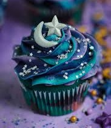

Galaxy Cupcakes🌌🧁

These magical cupcakes feature swirls of deep blue, purple,
and pink frosting, topped with edible glitter and star sprinkles.
Perfect for space lovers,
they’re a fun and delicious way to bring the
galaxy to your dessert table! 🚀✨
Ingredients
- 1 ½ cups all-purpose flour
- 1 cup granulated sugar
- ½ cup unsalted butter (softened)
- ½ cup milk (or plant-based alternative)
- 2 large eggs
- 1 ½ tsp vanilla extract
- 1 ½ tsp baking powder
- ¼ tsp salt
- 1 cup unsalted butter (softened)
- 3 cups powdered sugar
- 2 tbsp milk
- 1 tsp vanilla extract
- Purple, blue, and pink gel food coloring (halal-certified)
- Edible glitter & star sprinkles
Instructions
- Preheat your oven to 175°C (350°F) and line a cupcake tray with 12 liners.
- In a mixing bowl, whisk together flour, baking powder, and salt. Set aside.
- In another bowl, beat butter and sugar until fluffy. Add eggs and vanilla and mix well.
- Gradually add the dry ingredients while alternating with milk, mixing until smooth.
- Divide the batter into three bowls and color each one purple, blue, and pink (using halal gel food coloring).
- Spoon small amounts of each color into the cupcake liners, swirling them lightly with a toothpick for a galaxy effect.
- Bake for 18-20 minutes or until a toothpick inserted comes out clean.
- Let cupcakes cool completely before frosting.
- Beat butter and powdered sugar until smooth. Add milk and vanilla, mixing until fluffy.
- Divide into three bowls and color each one blue, purple, and pink.
- Place all colors side by side in a piping bag to create a swirled galaxy effect
- Pipe the frosting onto the cupcakes and sprinkle with edible glitter and star sprinkles.
Galaxy cupcakes are a stunning and delicious treat
that brings the beauty of space to your dessert table.
With their vibrant swirls of color and shimmering decorations,
they look just as magical as they taste! Perfect for birthdays,
space-themed parties, or just for fun, these cupcakes will leave
everyone starry-eyed. Enjoy your cosmic creation! 🚀✨